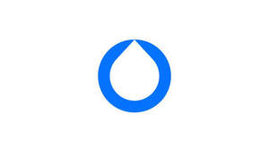
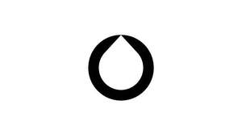
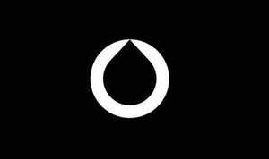

Trade Mark Journal No.2026/008 20 February 2026
UK00004327615 21 January 2026 (1,6,7,9,11,17,19,20,35,37,38,39,40,41,42)
Mark 1

Mark 2

Mark 3
Mark 4

- Class 1
- Chemicals for use in industry and science; chemicals for use in relation to water, wastewater and sewage; chemicals for use in relation to environmental pollution and water pollution; adhesives for use in industry; biological preparations for use in industry and science; biological substances for use in treating and processing water, wastewater and sewage; chemicals for treating water, wastewater and sewage; water treatment preparations; water treatment substances; water treatment agents; water treatment chemicals; water purifying preparations; water purifying substances; water purifying agents; water purifying chemicals.
- Class 6
- Metal materials for building and construction; transportable buildings of metal; small items of metal hardware; metal storage tanks; metal containers for storage; pipes and tubes of metal; riser pipes of metal; header pipes of metal; ironmongery; tanks of metal; small articles of metal hardware for use in water treatment and processing; separation tanks of metal; metal water tanks; portable water reservoirs of metal; parts and fittings for all the aforesaid goods.
- Class 7
- Machines, all for use in the field of water, wastewater and sewage; machine tools, power-operated tools, all for use in the field of water, wastewater and sewage; motors and engines, except for land vehicles, all for use in the field of water, wastewater and sewage; machine coupling and transmission components, except for land vehicles; generators; pumps; submersible pumps; centrifugal pumps; electric pumps; wellpoint pumps; sludge pumps; positive displacement pumps; power operated pumps; industrial mobile pumps, namely solids handling pumps; high volume drainer pumps; high head pumps and super silent pumps; water pumps; hydraulic pumps; pneumatic pumps; eater pumps; sewage handling pumps; sewage pumps; pumps for use with firefighting apparatus; electrical water pumps; axial flow pumps; rotary pumps; rotary lobe pumps; rotary lobe wellpoint pumps; high pressure jet pumps; vacuum pumps and suction lift pumps; lubricating pumps; macerator pumps; peristaltic hose pumps; vacuum pumps; reciprocating vacuum pumps; screw pumps; silt pumps; suction pumps; sump pumps; turbomolecular pumps; vertical turbine pumps; pumps for machines; shaft bearings for vacuum pumps; shafts for pumps; self-priming features for pumps; pump diaphragms; pump impellers; filter presses; valves; valves for pumps; pump control valves; vacuum pads for vacuum pump machines; variable speed drives for use with fluid pumping systems; variable speed scroll compressors for air conditioners and heat pumps; filtering machines; agricultural machines; machines and appliances for use in agriculture, building, construction and civil engineering; compressors, blowers, bulldozers, excavators, diggers, loaders, dumpers, cranes and mixers; sweeping machines; saw benches (parts of machines); machines for sorting and grading rubble, silt, sand, gravel, rock, stone or organic material; machines for receiving, segregating and processing waste, waste concrete and concrete washwater, and for capturing, containing and treatment of concrete washout material and waste concrete; water separators; effluent treatment installations to separate water from contaminants; effluent treatment machines to separate water from contaminants; devices and apparatus for the separation of oil from water; trammels; trommels; parts and fittings for all the aforesaid goods.
- Class 9
- Scientific, research, surveying, weighing, measuring, signalling, detecting, testing, inspecting and teaching apparatus and instruments, all for use in the field of water, wastewater and sewage; apparatus and instruments for recording, transmitting, reproducing or processing sound, images or data; recorded and downloadable media; calculating devices; fire-extinguishing apparatus; sensors; monitors; monitoring apparatus and instruments; computers, computer software, downloadable software, software platforms and software applications, all for use in the field of water, wastewater and sewage; computers, computer software, downloadable software, software platforms and software applications, all for use in relation to plants, installations, equipment, apparatus, instruments and systems for treating, processing, handling, testing, monitoring, moving, holding and storing water, wastewater and sewage, and in relation to pumps, pumping systems, generators, engines, water tanks, blowers, air filters, alternators, compressors, pressure regulators, oil separators, valves and filtration systems; computers, computer software, downloadable software, software platforms and software applications, all for monitoring and managing water treatment processes, equipment and systems, allowing users to access information and data, for measurement, communication, monitoring, collating, configuring, presenting, reporting, analysing and storing of information and data relating to water, wastewater, sewage, mechanical devices, pumps and engines; computer software, networks and servers, all for collating, configuring, presenting, reporting and storing information and data in relation to water, wastewater, sewage, mechanical devices, pumps and engines; computer hardware for use in capturing information and data from water, wastewater, sewage, mechanical devices, pumps and engines; automated communications apparatus, equipment and devices; telemetry apparatus, equipment and devices; telemetry and automated communication apparatus for measurement, communication, monitoring, collating, configuring, presenting, reporting, testing and analysing of information and data in relation to water, wastewater, sewage, mechanical devices, pumps and engines; telemetry and automated communication apparatus for sending communications, data and alerts to a receiving unit; software, network servers, equipment, apparatus and instruments for measurement, communication, monitoring, collating, configuring, presenting, reporting, testing, analysing and storing of information and data relating to water, wastewater, sewage, mechanical devices, pumps and engines; wireless equipment, apparatus and instruments; apparatus and equipment for monitoring water quality; water quality sensors; water quality meters; water meters; parts and fittings for all the aforesaid goods.
- Class 11
- Plants, installations, equipment, apparatus, instruments and systems for treating, processing, handling, moving, holding and storing water, wastewater and sewage; plants, installations, equipment, apparatus, instruments and systems for sanitary purposes; water purifiers; water ionizers; water sterilisers; water filters; water boilers; water treatment units; industrial waste water purification plants; sewage treatment, purification and disposal plants; water treatment units for aerating and circulating water; water purification tanks; pressurised water reservoirs; pressure water tanks; septic tanks; flushing tanks; wastewater treatment tanks; water desalination plants; apparatus for the removal of suspended solids from a liquid; devices for the separation of impurities from water; installations for the separation of liquids; apparatus and installations for filtering and treating water and wastewater; dewatering bags made of geotextile materials for removing suspended solids from water; dewatering bags made from woven or non-woven fabric; parts and fittings for all the aforesaid goods.
- Class 17
- Packing, stopping and insulating materials; flexible pipes, tubes and hoses, not of metal; riser pipes, not of metal; header pipes, not of metal; water hoses of plastic, rubber or textile; waterproof sealants; parts and fittings for all the aforesaid goods.
- Class 19
- Water tanks (non-metallic-) [structures]; stand tanks (non-metallic-); storage tanks [structures], not of metal; potable water reservoirs of non-metallic materials; parts and fittings for all the aforesaid goods.
- Class 20
- Containers, not of metal, for storage or transport; plastic water tanks; plastic storage tanks; plastic fuel tanks [other than parts of vehicles]; water tanks (non-metallic-) [containers]; portable water carriers [containers] made of plastics; liquid storage tanks [containers] made of non-metallic materials; storage tanks, not of metal or masonry; flexible containers of plastics for the storage of liquids; parts and fittings for all the aforesaid goods.
- Class 35
- Business management; business administration; office functions; human resources services; accounting and accountancy services; book keeping services; business consultancy services relating to disaster planning and recovery; retail services and wholesale services relating to the sale of materials for building and construction, transportable buildings, small items of metal hardware, containers for storage or transport, pipes and tubes, riser pipes, header pipes, ironmongery, tanks, small articles of metal hardware for use in water treatment and processing, separation tanks, water tanks, portable water reservoirs, machines for use in the field of water, wastewater and sewage, machine tools and power-operated tools for use in the field of water, wastewater and sewage, motors and engines, for use in the field of water, wastewater and sewage, machine coupling and transmission components, generators, pumps, shaft bearings for vacuum pumps, shafts for pumps, self-priming features for pumps, pump diaphragms, pump impellers, filter presses, valves, vacuum pads for vacuum pump machines, variable speed drives for use with fluid pumping systems, variable speed scroll compressors for air conditioners and heat pumps, filtering machines, agricultural machines, machines and appliances for use in agriculture, building, construction and civil engineering, compressors, blowers, bulldozers, excavators, diggers, loaders, dumpers, cranes and mixers, sweeping machines, saw benches, machines for sorting and grading rubble, silt, sand, gravel, rock, stone or organic material, machines for receiving, segregating and processing waste, waste concrete and concrete washwater, and for capturing, containing and treatment of concrete washout material and waste concrete, water separators, effluent treatment installations to separate water from contaminants, effluent treatment machines to separate water from contaminants, devices and apparatus for the separation of oil from water, trammels, trommels, scientific, research, surveying, weighing, measuring, signalling, detecting, testing, inspecting and teaching apparatus and instruments, all for use in the field of water, wastewater and sewage, apparatus and instruments for recording, transmitting, reproducing or processing sound, images or data, recorded and downloadable media, calculating devices, fire-extinguishing apparatus, sensors, monitors, monitoring apparatus and instruments, computers, computer software, downloadable software, software platforms and software applications, all for use in the field of water, wastewater and sewage, computers, computer software, downloadable software, software platforms and software applications, all for use in relation to plants, installations, equipment, apparatus, instruments and systems for treating, processing, handling, testing, monitoring, moving, holding and storing water, wastewater and sewage, and in relation to pumps, pumping systems, generators, engines, water tanks, blowers, air filters, alternators, compressors, pressure regulators, oil separators, valves and filtration systems, computers, computer software, downloadable software, software platforms and software applications, all for monitoring and managing water treatment processes, equipment and systems, allowing users to access information and data, for measurement, communication, monitoring, collating, configuring, presenting, reporting, analysing and storing of information and data relating to water, wastewater, sewage, mechanical devices, pumps and engines, computer software, networks and servers, all for collating, configuring, presenting, reporting and storing information and data in relation to water, wastewater, sewage, mechanical devices, pumps and engines, computer hardware for use in capturing information and data from water, wastewater, sewage, mechanical devices, pumps and engines, automated communications apparatus, equipment and devices, telemetry apparatus, equipment and devices, telemetry and automated communication apparatus for measurement, communication, monitoring, collating, configuring, presenting, reporting, testing and analysing of information and data in relation to water, wastewater, sewage, mechanical devices, pumps and engines, telemetry and automated communication apparatus for sending communications, data and alerts to a receiving unit, software, network servers, equipment, apparatus and instruments for measurement, communication, monitoring, collating, configuring, presenting, reporting, testing, analysing and storing of information and data relating to water, wastewater, sewage, mechanical devices, pumps and engines, wireless equipment, apparatus and instruments, apparatus and equipment for monitoring water quality, water quality sensors, water quality meters, water meters, plants, installations, equipment, apparatus, instruments and systems for treating, processing, handling, testing, monitoring, moving, holding and storing water, wastewater, and sewage, and for sanitary purposes, water purifiers, water ionizers, water sterilisers, water filters, water boilers, water treatment units, industrial waste water purification plants, sewage treatment, purification and disposal plants, water treatment units for aerating and circulating water, water purification tanks, pressurised water reservoirs, pressure water tanks, septic tanks, flushing tanks, wastewater treatment tanks, water desalination plants, apparatus for the removal of suspended solids from a liquid, devices for the separation of impurities from water, installations for the separation of liquids, apparatus and installations for filtering and treating water and wastewater, dewatering bags, water tanks, stand tanks, storage tanks, potable water reservoirs, fuel tanks, portable water carriers, flexible containers for the storage of liquids, packing, stopping and insulating materials, flexible pipes, tubes and hoses, water hoses, waterproof sealants, and parts and fittings for all the aforesaid goods, chemicals for use in industry and science, chemicals for use in relation to water, wastewater and sewage, chemicals for use in relation to environmental pollution and water pollution, adhesives for use in industry, putties and other paste fillers, biological preparations for use in industry and science, biological substances for use in treating and processing water, wastewater and sewage, chemicals for treating water, wastewater and sewage, water treatment preparations, water treatment substances, water treatment agents, water treatment chemicals, water purifying preparations, water purifying substances, water purifying agents, and water purifying chemicals; data management, inputting and processing; compilation of statistical data; database management services; compilation, updating and maintenance of data in computer databases; information, advisory and consultancy services relating to all the aforesaid services.
- Class 37
- Building construction; civil engineering construction and demolition services; pumping services in relation to water, wastewater and sewage; pumping of water from and to reservoirs; pumping of water, wastewater and sewage for commercial, industrial, municipal and environmental uses and purposes; land drainage and dewatering services; installation, repair, servicing, cleaning and maintenance of plants, installations, equipment, apparatus, instruments and systems for treating, processing, handling, testing, monitoring, moving, holding and storing water, wastewater and sewage, and of pumps, pumping systems, generators, engines, water tanks, blowers, air filters, alternators, compressors, pressure regulators, oil separators, valves and filtration systems; installation, maintenance and repair of computer hardware for use in relation to plants, installations, equipment, apparatus, instruments and systems for treating, processing, handling, testing, monitoring, moving, holding and storing water, wastewater and sewage, and in relation to pumps, pumping systems, generators, engines, water tanks, blowers, air filters, alternators, compressors, pressure regulators, oil separators, valves and filtration systems; rental and hire of pumps, pumping systems, generators, engines, water tanks, blowers, air filters, alternators, compressors, pressure regulators, oil separators and valves; rental and hire of machines and appliances for use in building, construction, civil engineering and agriculture; rental and hire of construction tools, plants and equipment, bulldozers, excavators, diggers, loaders, dumpers, cranes, road sweeping machines, pumps and mixing machines; vehicle and machinery refurbishment, renovation, repair and maintenance; information, advisory and consultancy services relating to all the aforesaid services.
- Class 38
- Communication services; communication services via downloadable and non-downloadable mobile applications; communication services via a web based portal; cellular communication services; electronic data transmission; communication services and electronic data transmission services in the field of water, wastewater and sewage; communication services and data transmission services in relation to plants, installations, equipment, apparatus, instruments and systems for treating, processing, handling, testing, monitoring, moving, holding and storing water, wastewater and sewage, and in relation to pumps, pumping systems, generators, engines, water tanks, blowers, air filters, alternators, compressors, pressure regulators, oil separators, valves and filtration systems; communication services to monitor the flow, contaminants and condition of water, wastewater and sewage; electronic data transmission services relating to the flow, contaminants and condition of water, wastewater and sewage; information, advisory and consultancy services relating to all the aforesaid services.
- Class 39
- Transportation, moving, storage and holding services in the field of water, wastewater and sewage; removal of water, wastewater and sewage; rental and hire of plants, installations, equipment, apparatus, instruments and systems for transporting, moving, storing and holding water, wastewater and sewage; information, advisory and consultancy services relating to all the aforesaid services.
- Class 40
- Treatment, recycling, handling and processing of materials, water, wastewater and sewage; water pollution control services; rental and hire of plants, installations, equipment, apparatus, instruments and systems for treating, processing and handling water, wastewater and sewage, and of filtration systems, dewatering equipment, trommels, machines for processing waste, machines for sorting rubble, silt, sand, gravel, rock, stone or organic material, machines for grading rubble, silt, sand, gravel, rock, stone or organic material, machines for capturing, containing and treatment of concrete washout material and waste concrete, machines for the treatment of concrete washwater, machines for receiving and segregating waste concrete from concrete washwater, and apparatus for the separation of oil from water; regeneration of water and wastewater; water pollution control services; water purification services; water demineralisation services; separation of oil from water; information, advisory and consultancy services relating to all the aforesaid services.
- Class 41
- Educational services; training services; educational and training services in the field of human resources; staff training and development services; educational and training services in relation to health & safety; educational and training services in the field of water, wastewater and sewage; educational and training services in relation to plants, installations, equipment, apparatus, instruments and systems for treating, processing, handling, testing, monitoring, moving, holding and storing water, wastewater and sewage, and in relation to pumps, pumping systems, generators, engines, water tanks, blowers, air filters, alternators, compressors, pressure regulators, oil separators, valves and filtration systems; information, advisory and consultancy services relating to all the aforesaid services.
- Class 42
- Scientific and technological services and research and design relating thereto; industrial analysis and industrial research services; design and development of computer hardware and software; provision of technical data; technical data analysis; industrial design services; technological services and technical data analysis in the field of water, wastewater and sewage; design and development of plants, installations, equipment, apparatus, instruments and systems for treating, processing, handling, testing, monitoring, moving, holding and storing water, wastewater and sewage, and of pumps, pumping systems, generators, engines, water tanks, blowers, air filters, alternators, compressors, pressure regulators, oil separators, valves and filtration systems; surveying and technical research; engineering services; scientific and technological research, design and planning in the field of natural disasters; environmental hazard assessment and planning; scientific and technical consultancy services relating to disaster planning and recovery; providing online non-downloadable software for data analytics, artificial intelligence and predictive maintenance; providing online non-downloadable software for use in relation to mechanical devices, pumps and engines; providing online non-downloadable software for use in the field of water, wastewater and sewage; providing online non-downloadable software in relation to plants, installations, equipment, apparatus, instruments and systems for treating, processing, handling, testing, monitoring, moving, holding and storing water, wastewater and sewage, and in relation to pumps, pumping systems, generators, engines, water tanks, blowers, air filters, alternators, compressors, pressure regulators, oil separators, valves and filtration systems; software as a service [SAAS] and platform as a service [PAAS] in the field of water, wastewater and sewage; software as a service [SAAS] and platform as a service [PAAS] in relation to plants, installations, equipment, apparatus, instruments and systems for treating, processing, handling, testing, monitoring, moving, holding and storing water, wastewater and sewage, and in relation to pumps, pumping systems, generators, engines, water tanks, blowers, air filters, alternators, compressors, pressure regulators, oil separators, valves and filtration systems; design and development of computer software, hardware, web based portals and communication systems, all for use in the field of water, wastewater and sewage; design and development of computer software, hardware, web based portals and communication systems, all for use with plants, installations, equipment, apparatus, instruments and systems for treating, processing, handling, testing, monitoring, moving, holding and storing water, wastewater and sewage, and for use with pumps, pumping systems, generators, engines, water tanks, blowers, air filters, alternators, compressors, pressure regulators, oil separators, valves and filtration systems; testing and monitoring services in the field of water, wastewater and sewage; testing and monitoring of plants, installations, equipment, apparatus, instruments and systems for treating, processing, handling, testing, monitoring, moving, holding and storing water, wastewater and sewage, and of pumps, pumping systems, generators, engines, water tanks, blowers, air filters, alternators, compressors, pressure regulators, oil separators, valves and filtration systems; rental and hire of plants, installations, equipment, apparatus, instruments and systems for testing and monitoring water, wastewater and sewage; installation, maintenance and repair of computer software for use in the field of water, wastewater and sewage; installation, maintenance and repair of computer software for use in relation to plants, installations, equipment, apparatus, instruments and systems for treating, processing, handling, testing, monitoring, moving, holding and storing water, wastewater and sewage, and in relation to pumps, pumping systems, generators, engines, water tanks, blowers, air filters, alternators, compressors, pressure regulators, oil separators, valves and filtration systems; provision of scientific and technical data and information in the field of water, wastewater and sewage; provision of scientific and technical data and information in relation to plants, installations, equipment, apparatus, instruments and systems for treating, processing, handling, testing, monitoring, moving, holding and storing water, wastewater and sewage, and in relation to pumps, pumping systems, generators, engines, water tanks, blowers, air filters, alternators, compressors, pressure regulators, oil separators, valves and filtration systems; compilation of scientific and technical data and information into computer databases in the field of water, wastewater and sewage; temporary electronic storage of information and data in the field of water, wastewater and sewage; scientific and technical monitoring, analysis and reporting services in the field of water, wastewater and sewage; environmental testing and monitoring services; sampling for pollution; water quality control services; scientific and technical data collection, conversion and management, all in the field of water, wastewater and sewage; laboratory services; laboratory testing services; laboratory and testing services in the field of water, wastewater and sewage; hosting a web-based portal to allow others to view and analyse data in the field of water, wastewater and sewage; information, advisory and consultancy services relating to all the aforesaid services.
Workdry International Limited
Representative: Kilburn & Strode LLP